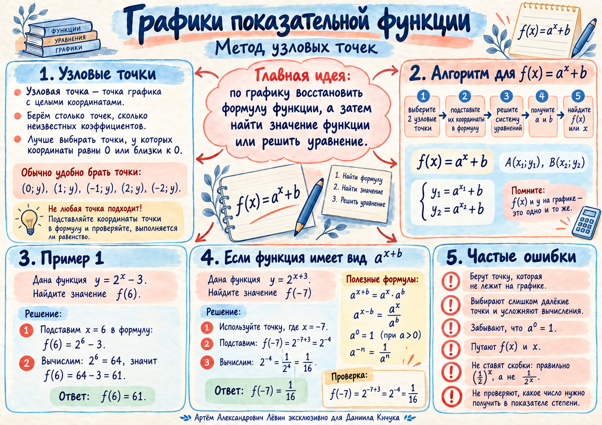

График
f(x)=2ˣ−3
графикузловые точки
A(0;−2), B(1;−1)02.10.2026 · профильная математика
Метод узловых точек: считываем точные координаты, превращаем их в уравнения для параметров, восстанавливаем формулу и только после этого считаем нужное значение или решаем уравнение.
График строится из формулы непосредственно в браузере. Переключайте примеры и следите, какие точки дают самые короткие вычисления.
График
Пройдите разбор базового примера шаг за шагом. На каждом шаге остаётся только одно математическое действие.
Функция имеет вид f(x)=aˣ+b и проходит через точки A(0;−2) и B(1;−1).
Точка с x=0 особенно удобна: a⁰=1.
Если подстановка уничтожила неизвестный параметр, это сигнал заменить точку на другую узловую.
Равенство истинно при любом допустимом a. Точка подтверждает принадлежность графику, но основание не определяет.
Для точки (−3;1) используйте 1=a⁰: −3+b=0, значит b=3.
Для точки (−1;2): 2=a², поэтому a=√2.
В обратную сторону 1=a⁰ помогает сравнивать показатели при одинаковом основании.
Для основания показательной функции учитывайте условия a>0 и a≠1. Дробное основание всегда берите в скобки.
Короткий release-gate перед ответом.
| Ошибка | Как исправить |
|---|---|
| Взяли точку рядом с графиком | Используйте только точку, точно лежащую на графике. |
| Перепутали x и y | Для (x₀;y₀) всегда пишите f(x₀)=y₀. |
| Выбрали неудобные точки | Сначала ищите нули, единицы и небольшие координаты. |
| Параметр исчез после подстановки | Возьмите другую точку, которая даст новое независимое уравнение. |
| Получили отрицательное основание a | Для показательной функции такое основание не подходит. |
| Потеряли скобки | Пишите (1/2)^(x−3): составное основание должно быть заключено в скобки. |
| Нашли параметры и остановились | Соберите функцию и выполните финальное требование: f(k) или x. |
Все условия перенесены из материала занятия без добавления новых примеров.

Откройте изображение отдельно, если нужен компактный визуальный конспект перед тренировкой.
Открыть памятку в полном размере →Готовность: 0 из 6.